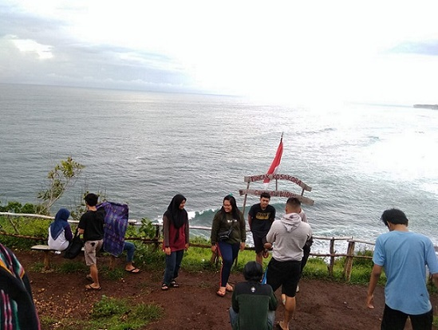
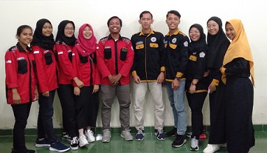

Story
-

Pada tanggal 20 Januari 2019, aku dan teman sejurusan mengadakan camping setelah Ujian Akhir Semester genap. Kami pergi menggunakan kendaraan motor dengan berpasang-pasangan dimana anak cewek yang diboncengi oleh anak cowok. Selama perjalanan awalnya lancar - lancar saja tetapi....
Baca -

Pada tanggal 4 Maret 2020 kabinet Bersatu melakukan kegitan kunjungan atau study banding ke salah satu BEM Universitas di Yogyakarta, yaitu Politeknik Lembaga Pendidikan Perkebunan atau disingkat LPP.
Baca -

Badan Eksekutif Mahasiswa merupakan suatu lembaga tertinggi yang dapat langsung menghubungkan Mahasiswa dengan pihak kampus. BEM kabinet bersatu merupakan lembaga BEM yang ada di STMIK Akakom Yogyakarta yang berdomisili Banguntapan, Bantul, Yogyakarta.
Baca